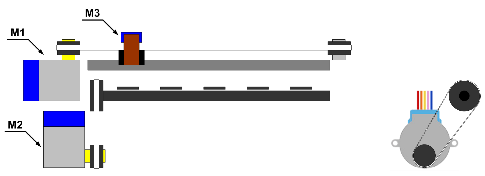
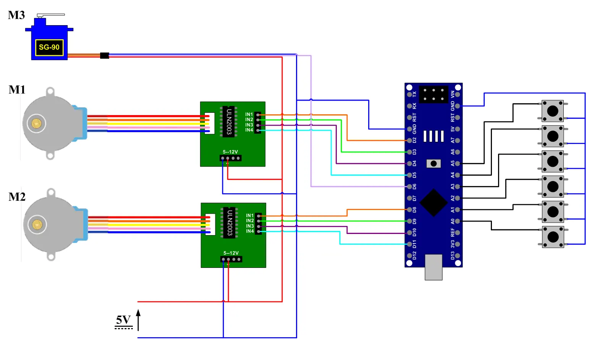
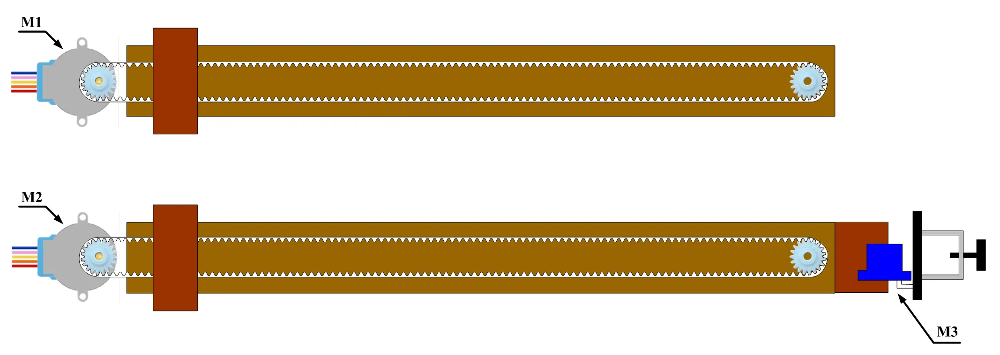
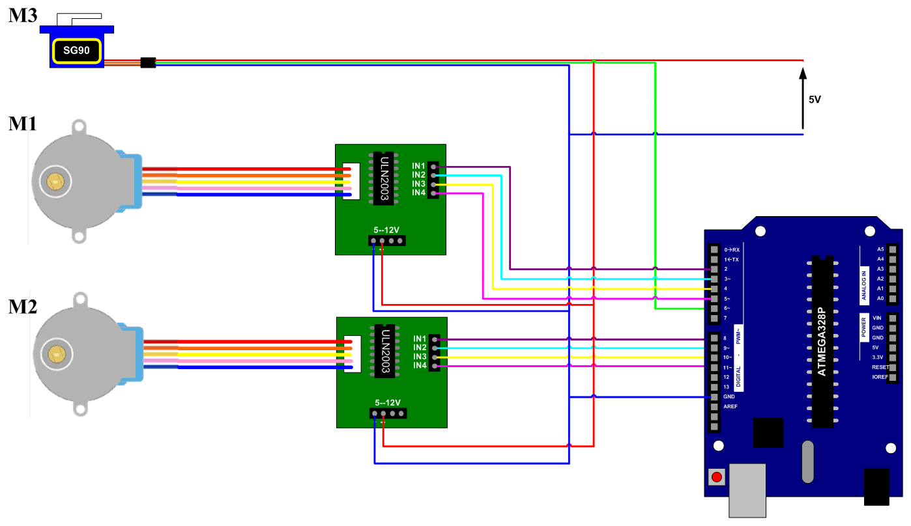
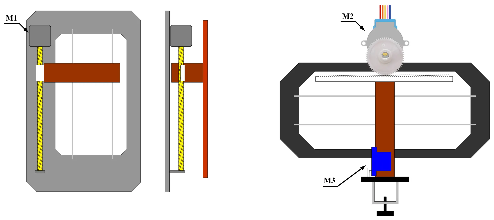
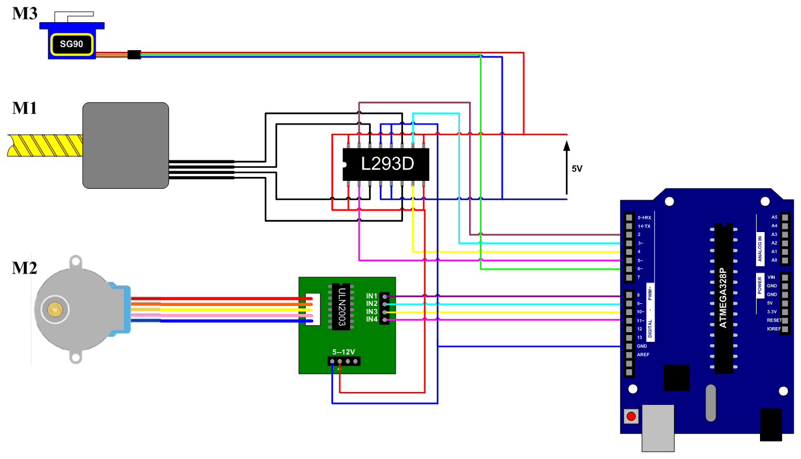

Modell 4 :
Projektüberblick :
Die vierte Version stellt eine Weiterentwicklung in jeder Hinsicht gegenüber der ersten, zweiten und dritten Version dar, da sie nicht nur eine hohe Genauigkeit, sondern auch eine sehr hohe Geschwindigkeit und ein hohes Drehmoment dank zwei Motoren vom Typ NEMA34 aufweist. Darüber hinaus wurden die Abmessungen vergrössert, sodass die Maschine nun mit Abmessungen von vierzig zu vierzig Zentimetern zeichnen kann. Im Gegensatz zu den vorherigen Versionen, die über ein Kabel mit dem Computer verbunden werden, erfolgt die Steuerung bei dieser Version drahtlos über Bluetooth.
Mechanischer Aufbau :


Zur genauen und hochtourigen Bewegung der Achsen wurde für beide Achsen ein gezahnter Riemen verwendet.
Elektrische Steuerung :

Für den ordnungsgemässen Betrieb der Maschine wurde ein Netzteil mit einem Ausgang von vierundzwanzig Volt und fünf Ampere zur Versorgung der grossen Schrittmotoren installiert. Zudem wurde ein Transformator zur separaten Versorgung der Steuerschaltung unabhängig von den Motoren eingesetzt, da die grossen Motoren einen hohen Strom ziehen, was die Steuerschaltung beeinträchtigt. Der verwendete Transformator verfügt über zwei Ausgänge, um den Servomotor separat von der Steuerschaltung versorgen zu können, da eines der Probleme der vorherigen Versionen der Spannungsabfall aufgrund der Versorgung des Motors und der Steuerschaltung aus derselben Spannungsquelle war, was beim Einschalten des Motors einen Reset der Steuerschaltung verursachte.

Die drehmomentstarken Motoren vom Typ NEMA34 arbeiten nicht mit einer konstanten Spannung wie die Motoren der vorherigen Versionen, sondern es handelt sich um Hybridmotoren, die mit einem konstanten Strom betrieben werden. Daher ist ein Treibermodul vom Typ TB6600 erforderlich, das diesem Motor einen konstanten und hohen Strom liefert. Für jeden Motor ist ein Treibermodul vom Typ TB6600 vorhanden, und es gibt einen Servomotor mit einer von der Steuerschaltung unabhängigen Stromversorgung, um das Problem des Spannungsabfalls und des Resets zu lösen. Um die Anzahl der Kabel zu reduzieren und die Distanz zu vergrössern, wurde ein Bluetooth Modul ohne jegliche Änderung des Programmcodes hinzugefügt. Die Steuerung in den vorherigen Versionen erfolgt über ein USB Kabel, welches das UART Protokoll verwendet, das zwei Leitungen für Senden und Empfangen benötigt. Daher wurde ein Bluetooth Modul vom Typ HC05 eingesetzt, da es mit dem UART Protokoll arbeitet und dies keinen Unterschied für den Arduino darstellt.

In der vorherigen Version wurden Tasten zur manuellen Steuerung der Achsen hinzugefügt, dies erfordert jedoch Zeit und Aufwand. Daher wurden induktive Sensoren eingesetzt, um den Nullpunkt präzise und mit einem einzigen Klick vom Computer aus einzustellen. Die Achsen bewegen sich auf der Suche nach dem Nullpunkt, und beim Erfassen durch den Sensor stoppt die Achse und betrachtet diesen Punkt als Startpunkt. Der Ausgang der Sensoren beträgt vierundzwanzig Volt, weshalb ein Relais verwendet wurde, das mit vierundzwanzig Volt arbeitet und ein schwaches Signal an den Arduino sendet.

Der Hybridmotor vom Typ NEMA34 ist ein bipolarer Motor, weshalb er mit vier Drähten an den Treibermodul TB6600 angeschlossen wird und in einem breiten Spannungsbereich von neun bis zweiundvierzig Volt arbeiten kann, wobei in diesem Fall vierundzwanzig Volt verwendet wurden. Zusätzlich zur Trennung des Leistungskreises vom Steuerkreis über einen sehr schnellen Optokoppler kann dieser Treiber bei fehlendem Signal einen relativ geringen Strom in die Motorwicklungen einspeisen, wodurch der Motor wie eine Bremse fixiert wird. Darüber hinaus verfügt dieser Treiber über Tasten zur Einstellung der Auflösung, wodurch festgelegt wird, wie weit sich der Motor bei jedem Schritt bewegt, und in diesem Fall wurde die höchste Auflösung gewählt, damit sich der Motor bei jedem Impuls um einen sehr kleinen Winkel dreht.
Modell 3 :
Projektüberblick :
Die zweite Version ist gross, entbehrt jedoch an Genauigkeit, da die Achsen ungenau sind. Daher wurde die dritte Version entwickelt, um eine sehr hohe Genauigkeit aufzuweisen, unter Beibehaltung der grossen Abmessungen, und diese Version enthält Tasten zur manuellen Steuerung der Achsen.
Mechanischer Aufbau :

Die erste Achse wird von einem Motor und einem gezahnten Riemen angetrieben, um ein Durchrutschen zu verhindern, während die zweite Achse aus einer Walze besteht, die das Papier bewegt, auf das gezeichnet wird, wodurch eine sehr hohe Genauigkeit erzielt wird.
Elektrische Steuerung :

Die Motorsteuerung entspricht der der zweiten Version, jedoch gibt es eine neue Ergänzung, die darin besteht, dass die Achsen manuell über Tasten an der Maschine bewegt werden können, wodurch der Startpunkt des Zeichnens manuell ausgewählt werden kann.
Modell 2 :
Projektüberblick :
Die erste Version wurde zu einer neuen und grossen Version mit einer Abmessung von fünfundzwanzig zu fünfundzwanzig Zentimetern weiterentwickelt.
Mechanischer Aufbau :

Es wurden zwei unipolare Schrittmodoren und ein Riemenscheiben und Riemen System verwendet, wobei der Riemen gezahnt sein muss, um ein Durchrutschen zu verhindern. Die Maschine besteht aus Holz, während die Teile, bei denen aufgrund der Bewegung Reibung entsteht, aus Metall sind.
Elektrische Steuerung :

Es wurde ein Arduino zur Steuerung verwendet, und da es sich um zwei unipolare Motoren handelt, war die Verwendung von zwei Treiberschaltungen des Typs ULN2003 erforderlich.
Modell 1 :
Projektüberblick :
Dieses Projekt ist ein Prototyp einer CNC-Zeichen und Schreibmaschine, die sich durch ein integriertes mechanisches Design auszeichnet, das die präzise Ausführung von Formen und Zeichnungen basierend auf den übermittelten Daten ermöglicht.
Mechanischer Aufbau :

Die Mechanik der Maschine besteht aus drei Hauptachsen; die erste Achse enthält einen bipolaren Schrittmotor und ein Spindelmutter-System zur Gewährleistung präziser Bewegungen, während die zweite Achse einen unipolaren Schrittmotor und ein Zahnstangen-System für horizontale Bewegungen umfasst. Die dritte Achse enthält einen Servomotor, der speziell dafür vorgesehen ist, den Schreib und Zeichenstift reibungslos anzuheben und abzusenken.
Elektrische Steuerung :

Zur Steuerung dieser Maschine ist ein Vermittler zwischen dem Computer und den Motoren erforderlich, bei dem es sich um das Arduino Board handelt, das die digitalen Signale vom Computer in präzise Bewegungen übersetzt. Da das Arduino nicht in der Lage ist, die Motoren direkt anzusteubern, wurde eine Schaltung (L293D) für den bipolaren Motor und eine weitere Schaltung (ULN2003) für den unipolaren Motor verwendet, während der Servomotor ausschließlich ein Pulsweitenmodulationssignal benötigt. Die Verbindung zum Computer erfolgt über ein USB Kabel.